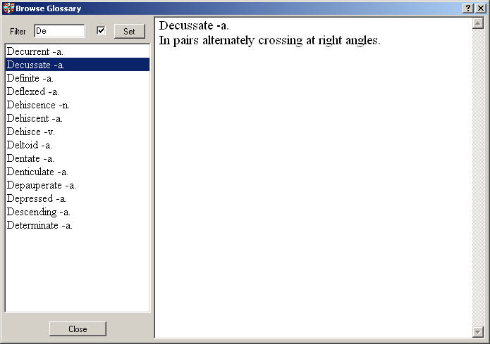

Browser for navigating through the glossary.

The Glossary browser window contains the glossary index with filter function and the glossary text.
In the upper left part of the window you can set a filter. If the checkbox beside the filter text is on, the filter is active, otherwise it is inactive. To set a new filter, enter the filter text in the textbox and click the “Set” button.